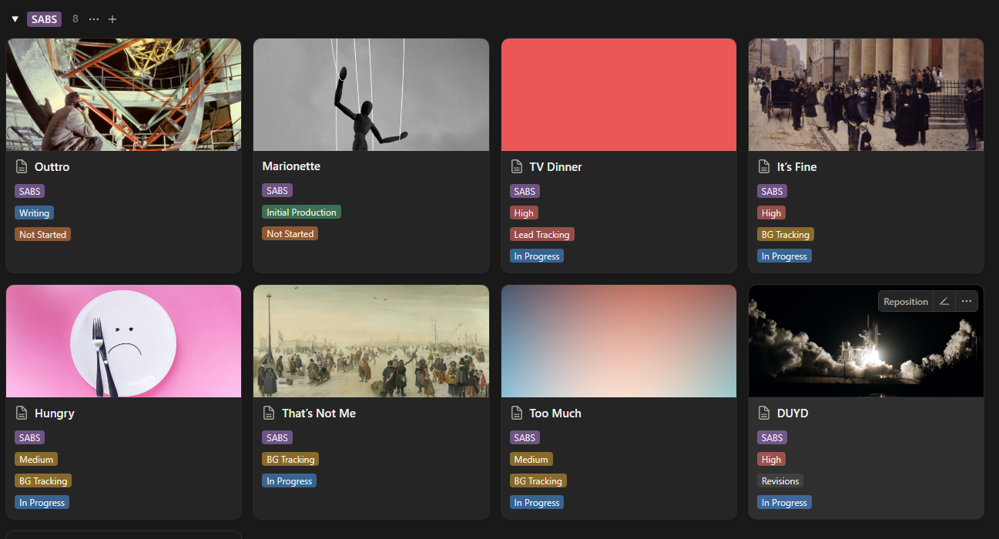
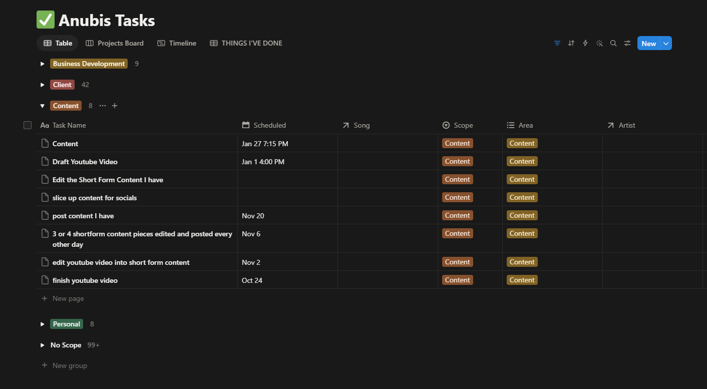

Creative ProjectOperations
Keeping complex creative work moving without stripping away the creative context.
A music project rarely behaves like one clean checklist. Several songs can be in writing, tracking, production, revisions, or delivery at the same time, while client decisions, files, collaborators, budgets, and schedules keep changing around them.
I built a working system around that mess instead of forcing the work into a generic task list. The goal was simple: keep enough structure to know what had to move next, without separating project management from the creative work it was supposed to support.

Click to inspectEach song remained its own unit of work, with the stage, priority, and status visible from the project level. That made it possible to scan the record as a whole without flattening eight different creative problems into one progress bar.
The task was never just the task.
Paying clients received project records that connected the practical layer of the work: requirements, notes, files, contracts, invoices, links, revision history, scheduled sessions, and the tasks required to move the project forward. The system stayed intentionally malleable because priorities in creative work change constantly.
One place to see what was competing for attention.
The central task system handled work that crossed individual song pages: client actions, business development, content, follow-ups, scheduled work, and other obligations that affected capacity.
Tasks could connect to project records, owners, due dates, urgency, meetings, and client or business goals. That made prioritization a portfolio problem instead of a collection of disconnected to-do lists.

Click to inspectStructure where it helped. Flexibility where the work demanded it.
Made decisions recoverable.
Project records kept notes, revisions, files, links, requirements, and responsibilities attached to the work instead of scattered across memory.
Made competing work visible.
Kanban views, status, due dates, urgency, and project relationships gave unrelated tasks a common prioritization layer.
Reduced rebuilding.
Default project templates and repeatable tasks worked as lightweight SOPs, while still leaving room for different artists and workflows.
Connected work to time.
Notion tasks and calendar workflows were used together to schedule sessions, follow-up, payments, and project obligations while reducing double-booking.
When friction repeated, the system changed.
The system was never treated as finished. Project friction fed back into new templates, intake questions, checklists, contract language, automations, or workflow changes. The point was not to create a perfect operating system. It was to stop paying for the same avoidable problem twice.
That continuous-improvement loop became as important as the database itself: capture what happened, preserve the context, adjust the process, and make the next project easier to run.